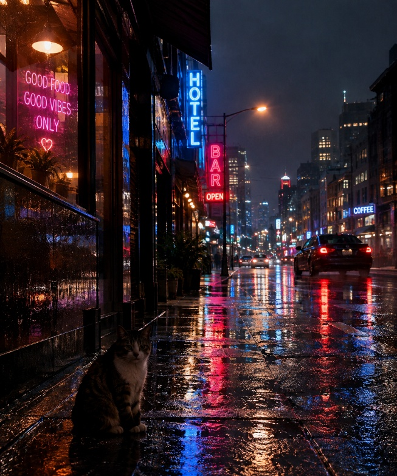
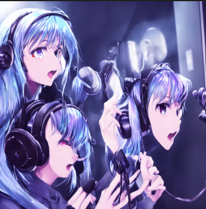
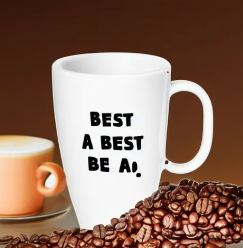
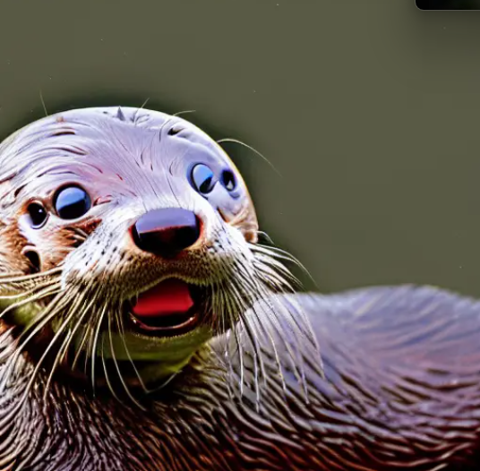
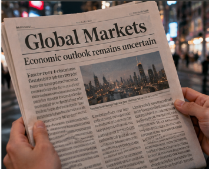

If you were on the internet at all in the late 2022, you’ve probably seen AI generated art and discussion of the impact of the tools and experienced AI gain popularity to where it is today. You’ve also probably seen a lot of hate for AI generated art in these years. There’s a lot of drama going on, as art focused communities across the internet decide how to handle this.AI-generated art stopped being a novelty a while ago. What’s left are the harder questions: who owns the output, whether training on artists’ work was lawful, how platforms should label it, and what it’s doing to people who make art for a living. The public backlash began with the episodes like the DeviantArt DreamUp controversy, but the dispute has since moved from comment sections into courtrooms.
The old advice, “just look for the weird hands,” is dead. Image generators are now good enough that most people can’t reliably tell the difference, and they improve every few months.
It’s been four years since AI art went mainstream, and the tools haven’t slowed down. What used to be easy to spot now often isn’t, and the gap between “AI slop” and “good enough to hire” keeps shrinking. That’s great news if you couldn’t draw before and a real problem if drawing is how, you pay rent, which is why the argument never really ended.
This is the headline feature: type what you want, get a picture back. In 2022 that often meant dozens or hundreds of attempts and a lot of trial-and-error with odd keywords. Now the best tools understand ordinary sentences, so you can say “a rainy street at night, neon signs in English, a cat in the foreground” and get something close on the first or second try.
Editing has changed the most. Instead of rerolling from scratch, you can usually ask for a change in plain language (“make it daytime,” “remove the car,” “same character, different pose”) and the tool adjusts the image. Text inside images, long a giveaway, is far more reliable than it used to be.
It’s still not push-button. Getting a specific vision, with the right composition, mood, and details, takes iteration, and prompting is a learnable skill. Open-weight models like Stable Diffusion and FLUX, run locally or through community tools, give the most control, including negative prompts for listing things you don’t want in the image. Many of the chat-style tools have dropped that feature in favor of simply telling the model what to avoid.
txt2img is also what worries many artists most, because it’s the feature that most directly competes with commissioned work.

“a rainy street at night, neon signs in English, a cat in the foreground”
In 2022, “AI video” mostly meant a few seconds of melting, flickering mush. Today you can type a sentence, or upload a single image, and get back a short clip with believable motion, camera moves, and often matching sound and dialogue.There are two main modes. Text-to-video works like text-to-image: describe a scene and the model invents it. Image-to-video starts from a picture (a photo, an illustration, or an AI image) and animates it, which gives you much more control over how the first frame looks. Many tools now also accept reference images, audio, or existing footage, and can edit a clip you already have (“same shot, but at night”).
Two things changed the most. First, sound: leading models can generate dialogue, ambient noise, and music along with the picture, instead of leaving you to add it afterward. Second, consistency: keeping the same character across several shots, which used to be the giveaway, is now workable.
The limits are still real. Clips are short, usually somewhere between 8 and 15 seconds. A full scene or film means stitching many generations together, and you’ll often discard a lot of them before one works. Long-term continuity, precise acting, and exact physical details still break easily.Video also raises the stakes of the other debates. A realistic clip of a real person saying something they never said is a different problem from a stylized picture, and studios have different worries about generated footage than illustrators do about generated art.
In 2022, you could spot AI art from across the room. Today the tells are subtler, but they haven’t disappeared.
What used to go wrong (and mostly doesn’t anymore)#
1.Hands and fingers.
Extra digits, fused knuckles and fingers growing out of sleeves were the signature flaw. Researchers explained it as a training-data problem: hands are small, often partly hidden or holding something, and look very different from pose to pose. Top models now get ordinary hands right most of the time.
2.Body horror in general. Melted faces, duplicated limbs and nonsense anatomy became far rarer as models improved, especially for single, well-framed subjects.

((Portrait)) of a ((single)) Anime waifu with long Iridescent hair and sharp facial features singing into a studio microphone and wearing studio headphones, in a recording booth
3.Gibberish text. Early models treated letters as shapes, so signs and book covers came out as scribbles. Current leaders handle posters, UI mockups and infographics far better.

A coffee cup that says "World’s best dad!"
4.Counting.
“Five soda cans” reliably gave you four or seven, because the model learned from many images with many quantities and never grasped the abstract number. Small counts (two to four objects) are much more dependable now, though I couldn’t find a reliable 2026 source measuring exactly how much.

portrait of an otter with 3 eyes
What still goes wrong
1.Long or small text. Reviews in 2026 still describe text accuracy as inconsistent across most models: long sentences, small print and stylized typography can still produce errors. I overstated this in my earlier summary when I called text “largely solved.” A better description is “solved for short, prominent text on the best models.”

2.Hands in complicated situations. Intricate finger positions, two people’s hands interacting, and small held objects still produce occasional artifacts, even though simple hands are mostly fixed.
3.The “AI look.” Even when nothing is technically wrong, outputs can look smooth, over-polished and samey. That’s an aesthetic complaint, not a bug, but many people use it to spot AI work.
Correct, and this is the part most people miss. If you only picture “type a sentence, get a picture,” it’s easy to see why artists feel threatened. But generation is only one tool in a growing kit, and many of the others work on art that already exists.
Image-to-image. Feed in a sketch, a photo or a finished piece and ask for variations, a different style, a different lighting setup or a cleaned-up version. The original acts as the blueprint, and you control how closely the result follows it.
Inpainting and outpainting. Paint over one region and regenerate just that part (fix a hand, swap a prop, change an outfit), or extend the canvas past its edges.
Plain-language editing. Newer tools let you say “make it night” or “remove the car” and change one thing while leaving the rest alone.
Control inputs. Pose skeletons, depth maps, line art and reference images can pin down composition, so the model fills in rendering rather than inventing the layout.
Cleanup tools. Upscaling, background removal, colorizing, noise removal and turning rough sketches into tidier line work are all common now, and many artists use them without thinking of them as “AI art.”
Animation. Image-to-video turns a still into a short moving clip, which is why a single illustration can now become a looping animation.
Put together, a lot of finished work isn’t purely human or purely machine-made. A painter might sketch by hand, block in color digitally, use a model to try lighting options, repaint by hand over the result, and run a final upscale. Where does “AI art” start in that chain? Reasonable people draw the line in different places.
Andersen v. Stability AI is the best-known lawsuit brought by visual artists over AI image generators. It is filed in the U.S. District Court for the Northern District of California (San Francisco Division) as Case No. 3:23-cv-00201-WHO, before Judge William Orrick, and was first filed on January 13, 2023 by three illustrators: Sarah Andersen, Kelly McKernan and Karla Ortiz.
By the Second Amended Complaint (filed October 31, 2024, Doc. 238), the case had grown from three artists to ten, and from three defendants to five. It asserts twelve counts under three laws:
the Copyright Act (direct infringement and inducement),
the Digital Millennium Copyright Act, §1202 (removing or altering copyright-management information), and
the Lanham Act (false endorsement and trade dress), against Midjourney only.
The ten named artists are illustrators, comic artists and fantasy and concept artists. According to the Second Amended Complaint:
Plaintiff
Lives in
Notes from the complaint
Sarah Andersen
Oregon
Original plaintiff; copyright registrations for her works are listed in Exhibit C
Kelly McKernan
Tennessee
Original plaintiff; a DeviantArt member
Karla Ortiz
California
Original plaintiff; registered copyrights after the first complaint was filed, so she does not assert copyright claims against Stability, Midjourney or DeviantArt, but is a plaintiff individually on the Runway count
H. Southworth (Hawke)
Oregon
A DeviantArt member
Grzegorz Rutkowski
Poland
A DeviantArt member
Gregory Manchess
Kentucky
Registrations listed in Exhibit C
Gerald Brom
Georgia
Registrations listed in Exhibit C
Jingna Zhang
Washington State
A DeviantArt member; images found in both LAION datasets
Julia Kaye
California
Registrations listed in Exhibit C
Adam Ellis
New York
Registrations listed in Exhibit C
How they say their work was used. The artists found their images in the LAION datasets by searching their own names on public tools (Have I Been Trained and the CLIP retrieval site). They present those images as a sample, not a full list.
A UK company founded in 2020 (the Delaware parent, Stability AI, Inc., owns Stability AI Ltd.). Co-developer of Stable Diffusion, the model behind several of the other defendants' products
Direct infringement by training (Stable Diffusion 2.0 and XL 1.0); inducement by distributing them free; DMCA
Midjourney, Inc.
San Francisco company founded in 2021; sells subscription access to its image product
Direct infringement for training its own models (versions 1 and 5.2); DMCA; Lanham Act false endorsement and trade dress
Runway AI, Inc.
New York company founded in 2018; the complaint says it collaborated with Stability on Stable Diffusion
Direct infringement by training (Stable Diffusion 1.5); inducement; DMCA
DeviantArt, Inc.
An online art community founded in 2000 and acquired by Wix.com in 2017. Released its paid AI tool, DreamUp, on November 9, 2022
Direct infringement by copying a Stable Diffusion-based model into DreamUp
Two details stand out:
Stability's role is central. The complaint treats Stable Diffusion as the model other defendants copied or built on, which is why the Runway and DeviantArt counts refer back to versions of it.
DeviantArt is a platform as well as a product. The complaint points out that several plaintiffs are DeviantArt members and that many training images were scraped from artist portfolios on sites like it.
“Custom art” here means work a person makes for a specific client or purpose, like a commissioned portrait, a logo, a book cover or a character design. “Generative art” means images produced by a model from a prompt, a reference image or an edit request. The two overlap more than the argument suggests, but they work differently, and clients, artists and platforms treat them differently.
Custom art takes days to weeks and is priced by the artist’s time and skill. You get a back-and-forth with someone who understands your intent, and one artist can hold a character or style steady for years. There is a named creator who can explain and revise their choices, and the rights generally belong to the artist, assigned or licensed to you under your contract.
The first collision is the market. Surveys of illustrators, photographers and Japanese freelancers report that some artists have lost work, been pushed toward lower prices, or been asked to work faster. Those figures are self-reported, but they point in the same direction, and cheap-and-good-enough tends to hit low-end commissions first.
The second is the training question. Whether these models were lawfully trained on artists’ work is the subject of the Andersen v. Stability AI case, and it is still undecided. Many artists see generative tools as built from their own labor, while the developers argue that training is a transformative use.
The third is ownership. The Supreme Court declined to hear Thaler v. Perlmutter in March 2026, so U.S. law still requires a human author. A pure AI output may have little or no copyright protection, which is a real problem for a client who wants exclusive ownership of a logo or character.
The fourth is disclosure. Some clients want to know how a piece was made, and some platforms and laws, including the EU’s AI transparency rules, are moving toward labeling.
When digital painting tools and programs like Photoshop spread in the 1990s and 2000s, many traditional artists dismissed the results. The complaints sound familiar: it isn’t real skill, the software does the work, the undo button removes the stakes, and anyone can do it now. Photography went through the same argument a century and a half earlier, and so did mechanical reproduction in general. The research paper you uploaded makes this point through Chris Barker, who argues that reactions to new reproduction technologies tend to recur in cycles rather than mark a single break, and it uses Duchamp’s Fountain as another example of a work first dismissed as not real art. On this view, generative art is the newest thing to go through the “that doesn’t count” phase, and digital art is the proof that these phases pass.
The strongest objection is that digital tools never needed other artists’ work in order to function. A graphics tablet and a paint program don’t contain a compressed record of millions of other people’s images. Generative models are trained on huge collections of existing art, and whether that was lawful is exactly what the Andersen case is arguing. Artists who accept digital art can still object to generative art on consent and compensation grounds, and those grounds have no equivalent in the earlier debate.
A second difference is how much of the result comes from the person. In digital painting, every mark is still made by the artist, so the legal and artistic question of authorship is easy. With generation, the human may contribute only a prompt, which is why U.S. law currently says an image with no human authorship can’t be copyrighted, and why the Supreme Court declined to revisit that in March 2026.
A third is scale and substitution. Digital tools made existing artists faster and opened art to more people, but they still required skill and time. Surveys of illustrators and photographers reported in your post suggest generative tools are already replacing paid work in some markets, which is a different kind of pressure.
Both things can be true. The “it isn’t real art” reaction really does resemble earlier technology panics, and many generative workflows, such as inpainting, upscaling and painting over a generated base, look a lot like digital art’s own history. But the lawsuits, the ownership rules and the economic effects are new questions that the digital art comparison doesn’t answer. So generative art may well become as normal as digital art, but it will likely get there only after the training and compensation questions are settled.
One line you could end on: digital art won its place by changing how artists work, and generative art still has to show it can do that without taking from the people it learned from.
Copyright & Fair Use: Watermarks and Training on Watermarked Images#
Watermarks matter in the AI art fight because they sit where three different legal questions meet. A visible watermark tells everyone that an image is owned or licensed, it can count as “copyright management information” under U.S. law, and it can function as a trademark. When image datasets were scraped from the internet, plenty of watermarked images went in with everything else, so the question becomes what the law says about training on them, removing the marks, and generating new images that carry a copy of the mark.
Large datasets like LAION were built by collecting links to billions of images and captions from the web, with no step that checked whether each image was licensed. The artists’ complaint in Andersen v. Stability AI says the LAION-5B dataset includes watermark detection scores, and argues that this plus the fact that copyright information is everywhere in art means Stability knew the dataset contained copyrighted works. Those are the artists’ allegations, not findings, but they show why watermarks became part of the legal argument: a watermark is evidence that a developer was on notice.
For the artists and agencies: a watermark shows an image was marked as owned or licensed, so the developer knew. Agencies like Getty sell image licenses, so a model that substitutes for those licenses is a straightforward market-harm argument. And a model that can reproduce the watermark is, on this view, evidence that it learned from and retained something from the original.
For the developers: training is a statistical process that learns patterns, not a stored library of images, and the UK court found the model was not a copy. A watermark showing up in an output is an unwanted artifact, not a feature, and filtering can reduce it. Developers also argue that seeing a watermark doesn’t prove a specific work was reproduced.
Neither side’s argument has been tested against evidence in a U.S. image-generator fair use ruling yet.
copyleft open source symbol gnu linux free software piracy theft crow bird talon logo minimal
Four years after AI image generators went mainstream, the panic has changed shape more than it has faded. The tools now handle short text, edits, consistent characters and even video with sound far better than in 2022, though they still stumble on long or small text, complicated hands, exact counts, reflections and physics. They are also more than a “type a prompt, get a picture” machine: image-to-image, inpainting, upscaling and video mean a lot of finished work is a mix of human and AI effort. Reactions that digital art and photography once faced suggest the “that isn’t real art” phase will pass, but the comparison only goes so far, because generative models were built from other people’s artwork in a way that earlier tools never were.
The law has so far answered smaller questions than the internet expected. In the U.S., copyright still requires a human author, and no court has issued a final fair use ruling on training an image generator. Andersen v. Stability AI has survived early rounds on its core training claim, while its DMCA claims were dropped and its more novel theories have drawn skepticism, and Getty won only a narrow trademark finding over watermarks in the UK. Meanwhile, surveys of artists report lost work and lower pay, and research on public opinion points to an audience that enjoys how AI images look but grows uneasy about authenticity, ownership and money. Both sides are right about something: these tools open art to more people, and they were built on creators’ work without consent or payment. What will settle the debate is not whether AI art is “real,” but whether training counts as fair use, how much human input counts as authorship, whether labeling rules spread, and whether creators get credit or compensation. Until then, the sensible approach is to disclose how work was made when it matters and to spell out ownership and AI-use terms in writing.